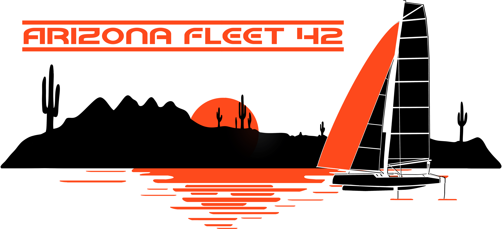

Arizona Multihull Fleet 42

Fleet 42 circa 1980s
2024 Sailing Calendar
Date Event Location Organizing group Notes --------------------------------------------------------------------------------------- Jan 28 Boat Show & Tell Tempe Town Lake Arizona Yacht Club video Feb 04 2024 Kick-off Party Dawson Residence Fleet 42/66 pics Feb 16-18 AYC Birthday Regatta Lake Pleasant Arizona Yacht Club pics video Mar 22-24 Spring Fever Sail Roosevelt Fleet 42 pics video Apr 19-21 Race Across the Lake Roosevelt Fleet 42 pics video May 03-05 Cinco de Mayo Regatta Rocky Point, MX Fleet 66 pics video Jun 14-16 Father's Day Sail Roosevelt Fleet 42 pics video Jul 20 Full Moon Sail Lake Pleasant Fleet 42 video Sep 27-29 Fall Fever Sail Roosevelt Fleet 42 pics video Oct 11-13 Pinata Regatta Rocky Point, MX Fleet 514 pics video Nov 01-03 November Sailfest Roosevelt Fleet 42 google iPhone Nov 23 AYC Governor's Cup Lake Pleasant Arizona Yacht Club MAP: Roosevelt Lake Windy Hill Coyote Camp Area site VHF Channel 72 is default channel at events. Then 68, 69 if there is a conflict.
Previous Calendars, Pictures and Video
To contact members or for event details see: Fleet 42 Facebook page
Merch
Purchase Fleet 42 T-shirts, mugs, and stickers at the Fleet 42 online Merch store!

About
Arizona Multihull Fleet 42 is a beach catamaran sailing club. We're an open fleet, home to all makes of beach catamarans. A-Cats, G-Cats, Formula 16/18, Hobies, Mysteres, Nacras, Prindles, SuperCats and Tornados are some of the classic catamarans and modern high-speed spinnaker cats you will find in our fleet.
History Past Events
Last updated: